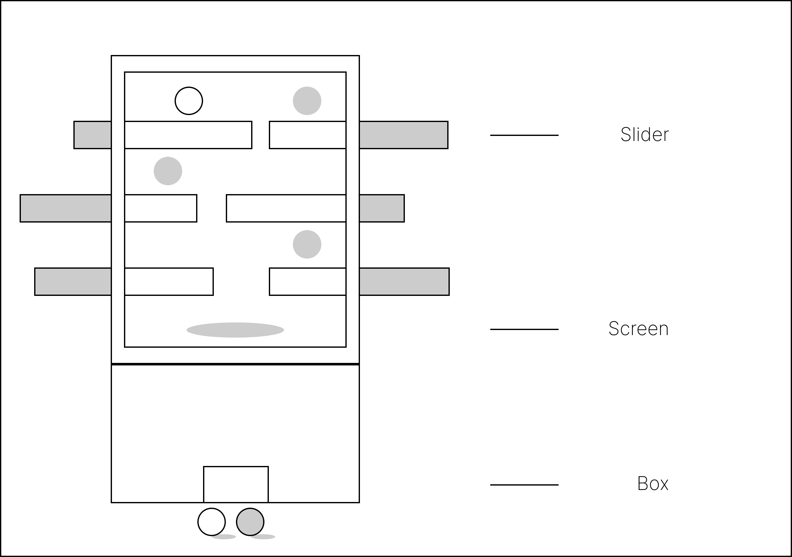
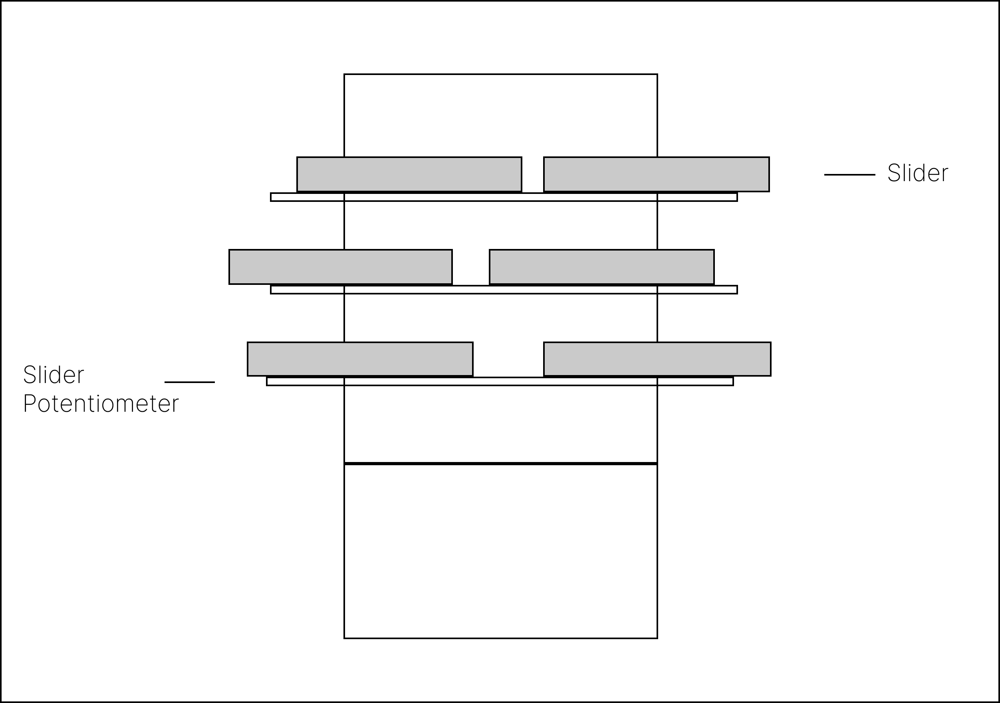
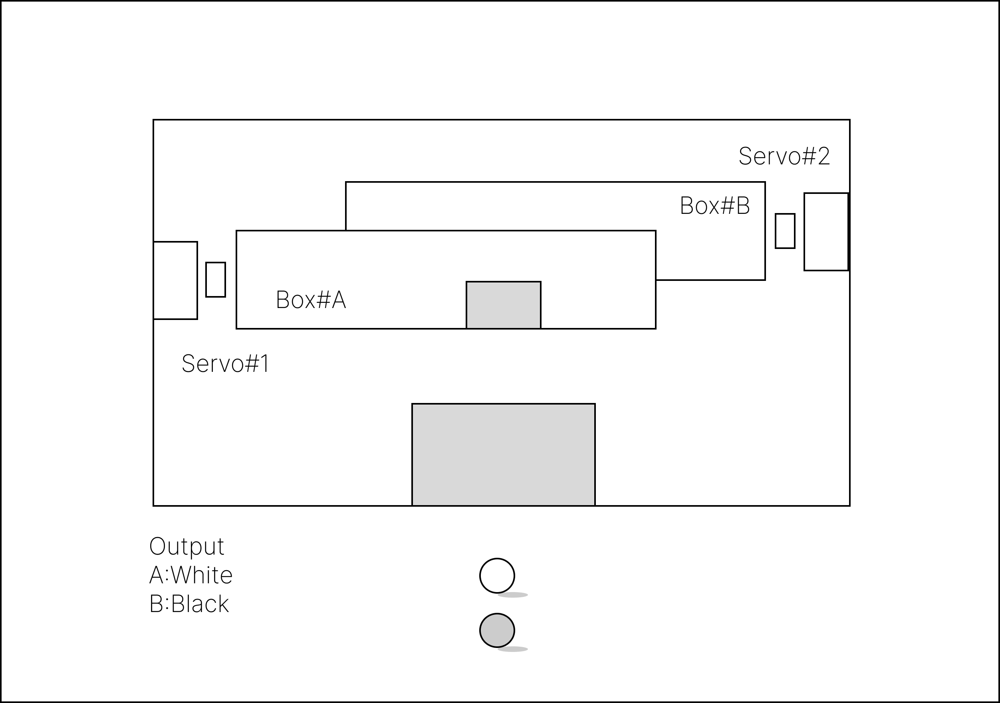

NEXUS
NEXUS
"NEXUS" is an installation project centered on connection, signal exchange, and the unstable boundary between individual presence and shared systems. The work approaches interaction as a networked condition: bodies, interfaces, and media continuously affect one another rather than acting in isolation. Through spatial composition and responsive visual output, the project turns the exhibition space into a field of linked behavior, where each action becomes part of a larger relational structure.
// PROCESS

The installation is integrated into a unified structural frame consisting of a horizontal linear rail with a sliding potentiometer, a digital display interface, and a dual-channel sphere dispenser. An Arduino microcontroller acts as the hardware abstraction layer, capturing analog signals from the slider and interfacing with Unity via serial communication to bridge physical movement with the virtual environment.

The participant's manual displacement of the slider is translated into the X-axis movement of a digital "seed" sphere. Within the Unity engine, a collision and color-sampling logic is implemented: when the controlled sphere interacts with black elements on screen, its grayscale value is dynamically modulated. This process digitizes the physical force of the user into a persistent visual variable.

Upon the digital sphere's exit into the hole at the bottom, the system performs a logic arbitration based on its final grayscale intensity. A command is sent to the servo-driven mechanical gate, which triggers the release of a corresponding physical sphere (black or white) from the internal storage. This stage completes the loop by materializing a digital outcome back into a tangible physical form.